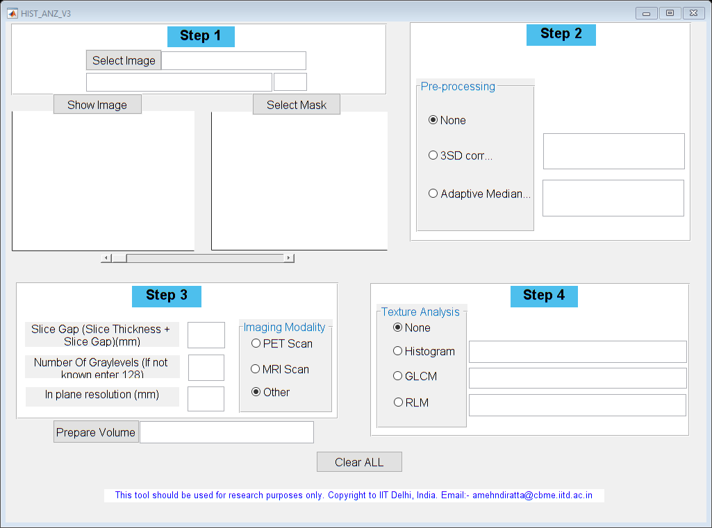

function varargout = HIST_ANZ_V3(varargin) % HIST_ANZ_V3 MATLAB code for HIST_ANZ_V3.fig % HIST_ANZ_V3, by itself, creates a new HIST_ANZ_V3 or raises the existing % singleton*. % % H = HIST_ANZ_V3 returns the handle to a new HIST_ANZ_V3 or the handle to % the existing singleton*. % % HIST_ANZ_V3('CALLBACK',hObject,eventData,handles,...) calls the local % function named CALLBACK in HIST_ANZ_V3.M with the given input arguments. % % HIST_ANZ_V3('Property','Value',...) creates a new HIST_ANZ_V3 or raises the % existing singleton*. Starting from the left, property value pairs are % applied to the GUI before HIST_ANZ_V3_OpeningFcn gets called. An % unrecognized property name or invalid value makes property application % stop. All inputs are passed to HIST_ANZ_V3_OpeningFcn via varargin. % % *See GUI Options on GUIDE's Tools menu. Choose "GUI allows only one % instance to run (singleton)". % % See also: GUIDE, GUIDATA, GUIHANDLES % Edit the above text to modify the response to help HIST_ANZ_V3 % Last Modified by GUIDE v2.5 06-Dec-2019 14:25:14 % Begin initialization code - DO NOT EDIT gui_Singleton = 1; gui_State = struct('gui_Name', mfilename, ... 'gui_Singleton', gui_Singleton, ... 'gui_OpeningFcn', @HIST_ANZ_V3_OpeningFcn, ... 'gui_OutputFcn', @HIST_ANZ_V3_OutputFcn, ... 'gui_LayoutFcn', [] , ... 'gui_Callback', []); if nargin && ischar(varargin{1}) gui_State.gui_Callback = str2func(varargin{1}); end if nargout [varargout{1:nargout}] = gui_mainfcn(gui_State, varargin{:}); else gui_mainfcn(gui_State, varargin{:}); end % End initialization code - DO NOT EDIT % --- Executes just before HIST_ANZ_V3 is made visible. function HIST_ANZ_V3_OpeningFcn(hObject, eventdata, handles, varargin) % This function has no output args, see OutputFcn. % hObject handle to figure % eventdata reserved - to be defined in a future version of MATLAB % handles structure with handles and user data (see GUIDATA) % varargin command line arguments to HIST_ANZ_V3 (see VARARGIN) % Choose default command line output for HIST_ANZ_V3 handles.output = hObject; % Update handles structure guidata(hObject, handles); % UIWAIT makes HIST_ANZ_V3 wait for user response (see UIRESUME) % uiwait(handles.figure1); % --- Outputs from this function are returned to the command line. function varargout = HIST_ANZ_V3_OutputFcn(hObject, eventdata, handles) % varargout cell array for returning output args (see VARARGOUT); % hObject handle to figure % eventdata reserved - to be defined in a future version of MATLAB % handles structure with handles and user data (see GUIDATA) % Get default command line output from handles structure varargout{1} = handles.output; % --- Executes on selection change in scantype. function scantype_Callback(hObject, eventdata, handles) % hObject handle to scantype (see GCBO) % eventdata reserved - to be defined in a future version of MATLAB % handles structure with handles and user data (see GUIDATA) % Hints: contents = cellstr(get(hObject,'String')) returns scantype contents as cell array % contents{get(hObject,'Value')} returns selected item from scantype % --- Executes during object creation, after setting all properties. function scantype_CreateFcn(hObject, eventdata, handles) % hObject handle to scantype (see GCBO) % eventdata reserved - to be defined in a future version of MATLAB % handles empty - handles not created until after all CreateFcns called % Hint: popupmenu controls usually have a white background on Windows. % See ISPC and COMPUTER. if ispc && isequal(get(hObject,'BackgroundColor'), get(0,'defaultUicontrolBackgroundColor')) set(hObject,'BackgroundColor','white'); end uicontrol('style','popup','string',{'PETScan';'MRScan';'Other'}) function edit1_Callback(hObject, eventdata, handles) % hObject handle to edit1 (see GCBO) % eventdata reserved - to be defined in a future version of MATLAB % handles structure with handles and user data (see GUIDATA) % Hints: get(hObject,'String') returns contents of edit1 as text % str2double(get(hObject,'String')) returns contents of edit1 as a double % --- Executes during object creation, after setting all properties. function edit1_CreateFcn(hObject, eventdata, handles) % hObject handle to edit1 (see GCBO) % eventdata reserved - to be defined in a future version of MATLAB % handles empty - handles not created until after all CreateFcns called % Hint: edit controls usually have a white background on Windows. % See ISPC and COMPUTER. if ispc && isequal(get(hObject,'BackgroundColor'), get(0,'defaultUicontrolBackgroundColor')) set(hObject,'BackgroundColor','white'); end function edit2_Callback(hObject, eventdata, handles) % hObject handle to edit2 (see GCBO) % eventdata reserved - to be defined in a future version of MATLAB % handles structure with handles and user data (see GUIDATA) % Hints: get(hObject,'String') returns contents of edit2 as text % str2double(get(hObject,'String')) returns contents of edit2 as a double % --- Executes during object creation, after setting all properties. function edit2_CreateFcn(hObject, eventdata, handles) % hObject handle to edit2 (see GCBO) % eventdata reserved - to be defined in a future version of MATLAB % handles empty - handles not created until after all CreateFcns called % Hint: edit controls usually have a white background on Windows. % See ISPC and COMPUTER. if ispc && isequal(get(hObject,'BackgroundColor'), get(0,'defaultUicontrolBackgroundColor')) set(hObject,'BackgroundColor','white'); end % --- Executes on selection change in Scantype. function Scantype_Callback(hObject, eventdata, handles) % hObject handle to Scantype (see GCBO) % eventdata reserved - to be defined in a future version of MATLAB % handles structure with handles and user data (see GUIDATA) % Hints: contents = cellstr(get(hObject,'String')) returns Scantype contents as cell array % contents{get(hObject,'Value')} returns selected item from Scantype % --- Executes during object creation, after setting all properties. function Scantype_CreateFcn(hObject, eventdata, handles) % hObject handle to Scantype (see GCBO) % eventdata reserved - to be defined in a future version of MATLAB % handles empty - handles not created until after all CreateFcns called % Hint: popupmenu controls usually have a white background on Windows. % See ISPC and COMPUTER. if ispc && isequal(get(hObject,'BackgroundColor'), get(0,'defaultUicontrolBackgroundColor')) set(hObject,'BackgroundColor','white'); end % --- Executes on button press in image. function image_Callback(hObject, eventdata, handles) % hObject handle to image (see GCBO) % eventdata reserved - to be defined in a future version of MATLAB % handles structure with handles and user data (see GUIDATA) axes(handles.axes3); if handles.ac == 4 handles.sliceno = str2double(get(handles.edit8,'String')); end if handles.ac == 4 handles.a = double(handles.a(:,:,:,handles.sliceno)); else handles.a = double(handles.a(:,:,:)); end imshow(handles.a(:,:,1),[]); guidata(hObject, handles); % --- Executes on button press in mask. function mask_Callback(hObject, eventdata, handles) % hObject handle to mask (see GCBO) % eventdata reserved - to be defined in a future version of MATLAB % handles structure with handles and user data (see GUIDATA) [baseName, folder] = uigetfile(handles.folder); filename = fullfile(folder, baseName); [filepath,name,ext] = fileparts(filename); handles.maskname = name; axes(handles.axes4); tf1 = strcmp(ext, '.gz'); if(tf1 ==1) handles.bb = load_untouch_niigz(filename); handles.b = double(handles.bb.img); % handles.ba = size(handles.b); % handles.bc = numel(handles.ba); %if handles.bc == 4 % handles.sliceno1 = str2double(get(handles.edit8,'String')); % end else handles.bb = load_untouch_nii(filename); handles.b = double(handles.bb.img); %handles.ba = size(handles.b); %handles.bc = numel(handles.ba); %if handles.bc == 4 % handles.sliceno1 = str2double(get(handles.edit8,'String')); % end end %if handles.bc ==4 % imshow(handles.b(:,:,1,handles.sliceno1),[]); %else imshow(handles.b(:,:,1),[]); %end guidata(hObject, handles); % --- Executes on button press in preparevolume. function preparevolume_Callback(hObject, eventdata, handles) % hObject handle to preparevolume (see GCBO) % eventdata reserved - to be defined in a future version of MATLAB % handles structure with handles and user data (see GUIDATA) handles.slicegap = str2double(get(handles.edit1,'String')); handles.graylevel = str2double(get(handles.edit2,'String')); handles.inplane = str2double(get(handles.edit3,'String')); [handles.ROIonly, handles.levels]= prepareVolume(handles.a(:,:,:),handles.b(:,:,:),handles.scan,handles.inplane,handles.slicegap,1,'pixelW','Matrix','Equal',handles.graylevel); set(handles.edit7,'string','Volume Prepared'); guidata(hObject, handles); function edit3_Callback(hObject, eventdata, handles) % hObject handle to edit3 (see GCBO) % eventdata reserved - to be defined in a future version of MATLAB % handles structure with handles and user data (see GUIDATA) % Hints: get(hObject,'String') returns contents of edit3 as text % str2double(get(hObject,'String')) returns contents of edit3 as a double % --- Executes during object creation, after setting all properties. function edit3_CreateFcn(hObject, eventdata, handles) % hObject handle to edit3 (see GCBO) % eventdata reserved - to be defined in a future version of MATLAB % handles empty - handles not created until after all CreateFcns called % Hint: edit controls usually have a white background on Windows. % See ISPC and COMPUTER. if ispc && isequal(get(hObject,'BackgroundColor'), get(0,'defaultUicontrolBackgroundColor')) set(hObject,'BackgroundColor','white'); end function edit4_Callback(hObject, eventdata, handles) % hObject handle to edit4 (see GCBO) % eventdata reserved - to be defined in a future version of MATLAB % handles structure with handles and user data (see GUIDATA) % Hints: get(hObject,'String') returns contents of edit4 as text % str2double(get(hObject,'String')) returns contents of edit4 as a double % --- Executes during object creation, after setting all properties. function edit4_CreateFcn(hObject, eventdata, handles) % hObject handle to edit4 (see GCBO) % eventdata reserved - to be defined in a future version of MATLAB % handles empty - handles not created until after all CreateFcns called % Hint: edit controls usually have a white background on Windows. % See ISPC and COMPUTER. if ispc && isequal(get(hObject,'BackgroundColor'), get(0,'defaultUicontrolBackgroundColor')) set(hObject,'BackgroundColor','white'); end % --- Executes when selected object is changed in uibuttongroup1. function uibuttongroup1_SelectionChangedFcn(hObject, eventdata, handles) % hObject handle to the selected object in uibuttongroup1 % eventdata reserved - to be defined in a future version of MATLAB % handles structure with handles and user data (see GUIDATA) switch(get(eventdata.NewValue,'Tag')) case 'histogram' %set(handles.edit4,'string',''); %handles.bc = double(handles.b(:,:,:)); handles.cc= handles.a .* handles.b; handles.dd= nonzeros(handles.cc); %mean of the image%%%%%%%%%%%%%%%%%%%%%%%%%%%%%%%%% handles.Avgmean = nanmean (handles.dd); %%%%%%Median of the matrix%%%%%% handles.M = nanmedian(handles.dd); %%%%%%%%%%%Mode of thematrix%%%%% handles.m = mode(handles.dd); %%disp(handles.m); %%%%%%%%%%%%%standard deviatiion of matrix %%%%%%%%%%%%% handles.d = double(handles.dd); handles.s = nanstd(handles.d); %%%%%%%%%%%Variance of the matrix%%%%%%%%% handles.vv = nanvar(handles.d); %%%%%%%%%%%skewness of the matrix%%%%%%%% handles.sk = skewness(handles.d, 1); %%%%%%%%%%%%entropy of matrix%%%%%%%% handles.e = entropy(handles.dd); %%%%%%%kurtosis of the image%%%%%% handles.k = kurtosis(handles.d); %set(handles.edit4,'string',handles.Avgmean,handles.m,handles.M,handles.s,handles.vv,handles.sk,handles.e,handles.k); z = strcat(handles.folder,handles.name,'_',handles.maskname,'_histanz.xlsx'); col_header = { 'Mean', 'Median', 'Mode', 'Standard Deviation', 'Variance', 'Skewness', 'Entropy', 'Kurtosis'}; handles.A=[handles.Avgmean, handles.M, handles.m, handles.s, handles.vv, handles.sk, handles.e,handles.k]; handles.AA = num2cell(handles.A); D = transpose(col_header); handles.E = transpose(handles.A); T = table(D, handles.E); writetable(T, z); set(handles.edit4,'string','Histogram Analysis done and saved'); case 'glcm' set(handles.edit5,'string',''); handles.glcmmatrix= getGLCM(handles.ROIonly, handles.levels); handles.glcmtextures = getGLCMtextures(handles.glcmmatrix); %b= handles.glcmtextures.SumAverage handles.B=[handles.glcmtextures.Energy, handles.glcmtextures.Contrast, handles.glcmtextures.Entropy, handles.glcmtextures.Homogeneity, handles.glcmtextures.Correlation, handles.glcmtextures.SumAverage, handles.glcmtextures.Variance,handles.glcmtextures.Dissimilarity,handles.glcmtextures.AutoCorrelation]; z = strcat(handles.folder, handles.name,'_',handles.maskname,'_glcmanz.xlsx'); col_header = { 'Energy', 'Contrast', 'Entropy', 'Homogenity', 'Correlation', 'Sum Average', 'Variancce', 'Dissimilarity','Autocorrelation'}; %handles.B=[handles.glcmtextures.Energy, handles.glcmtextures.Contrast, handles.glcmtextures.Entropy, handles.glcmtextures.Homogeneity, handles.glcmtextures.Correlation, handles.glcmtextures.SumAverage, handles.glcmtextures.Variance,handles.glcmtextures.Dissimilarity,handles.glcmtextures.AutoCorrelation]; handles.BB = num2cell(handles.B); H = transpose(col_header); handles.G = transpose(handles.B); V = table(H, handles.G); writetable(V, z); set(handles.edit5,'string','GLCM features done and saved'); case 'rlm' set(handles.edit6,'string',''); handles.rlmmatrix= getGLRLM(handles.ROIonly,handles.levels); handles.rlmfeatures = getGLRLMtextures(handles.rlmmatrix); %set(handles.edit4,'string',handles.rlmtextures); handles.C=[handles.rlmfeatures.SRE, handles.rlmfeatures.LRE, handles.rlmfeatures.GLN, handles.rlmfeatures.RLN, handles.rlmfeatures.RP, handles.rlmfeatures.LGRE, handles.rlmfeatures.HGRE,handles.rlmfeatures.SRLGE,handles.rlmfeatures.SRHGE,handles.rlmfeatures.LRLGE,handles.rlmfeatures.LRHGE,handles.rlmfeatures.GLV]; %set(handles.edit4,'string',handles.B); z = strcat(handles.folder,handles.name,'_',handles.maskname,'_rlmanz.xlsx'); col_header = { 'SRE', 'LRE', 'GLN', 'RLN', 'RP', 'LGRE', 'HGRE', 'SRLGE','SRHGE','LRLGE','LRHGE','GLV'}; %handles.B=[handles.glcmtextures.Energy, handles.glcmtextures.Contrast, handles.glcmtextures.Entropy, handles.glcmtextures.Homogeneity, handles.glcmtextures.Correlation, handles.glcmtextures.SumAverage, handles.glcmtextures.Variance,handles.glcmtextures.Dissimilarity,handles.glcmtextures.AutoCorrelation]; handles.CC = num2cell(handles.C); H = transpose(col_header); handles.I = transpose(handles.C); V = table(H, handles.I); writetable(V, z); set(handles.edit6,'string','RLM features done and saved'); end guidata(hObject,handles); function edit5_Callback(hObject, eventdata, handles) % hObject handle to edit5 (see GCBO) % eventdata reserved - to be defined in a future version of MATLAB % handles structure with handles and user data (see GUIDATA) % Hints: get(hObject,'String') returns contents of edit5 as text % str2double(get(hObject,'String')) returns contents of edit5 as a double % --- Executes during object creation, after setting all properties. function edit5_CreateFcn(hObject, eventdata, handles) % hObject handle to edit5 (see GCBO) % eventdata reserved - to be defined in a future version of MATLAB % handles empty - handles not created until after all CreateFcns called % Hint: edit controls usually have a white background on Windows. % See ISPC and COMPUTER. if ispc && isequal(get(hObject,'BackgroundColor'), get(0,'defaultUicontrolBackgroundColor')) set(hObject,'BackgroundColor','white'); end function edit6_Callback(hObject, eventdata, handles) % hObject handle to edit6 (see GCBO) % eventdata reserved - to be defined in a future version of MATLAB % handles structure with handles and user data (see GUIDATA) % Hints: get(hObject,'String') returns contents of edit6 as text % str2double(get(hObject,'String')) returns contents of edit6 as a double % --- Executes during object creation, after setting all properties. function edit6_CreateFcn(hObject, eventdata, handles) % hObject handle to edit6 (see GCBO) % eventdata reserved - to be defined in a future version of MATLAB % handles empty - handles not created until after all CreateFcns called % Hint: edit controls usually have a white background on Windows. % See ISPC and COMPUTER. if ispc && isequal(get(hObject,'BackgroundColor'), get(0,'defaultUicontrolBackgroundColor')) set(hObject,'BackgroundColor','white'); end function edit7_Callback(hObject, eventdata, handles) % hObject handle to edit7 (see GCBO) % eventdata reserved - to be defined in a future version of MATLAB % handles structure with handles and user data (see GUIDATA) % Hints: get(hObject,'String') returns contents of edit7 as text % str2double(get(hObject,'String')) returns contents of edit7 as a double % --- Executes during object creation, after setting all properties. function edit7_CreateFcn(hObject, eventdata, handles) % hObject handle to edit7 (see GCBO) % eventdata reserved - to be defined in a future version of MATLAB % handles empty - handles not created until after all CreateFcns called % Hint: edit controls usually have a white background on Windows. % See ISPC and COMPUTER. if ispc && isequal(get(hObject,'BackgroundColor'), get(0,'defaultUicontrolBackgroundColor')) set(hObject,'BackgroundColor','white'); end % --- Executes on button press in pushbutton4. function pushbutton4_Callback(hObject, eventdata, handles) % hObject handle to pushbutton4 (see GCBO) % eventdata reserved - to be defined in a future version of MATLAB % handles structure with handles and user data (see GUIDATA) set(handles.edit4,'string',''); set(handles.edit5,'string',''); set(handles.edit6,'string',''); set(handles.edit7,'string',''); set(handles.edit11,'string',''); set(handles.edit12,'string',''); % --- Executes on slider movement. function slider1_Callback(hObject, eventdata, handles) % hObject handle to slider1 (see GCBO) % eventdata reserved - to be defined in a future version of MATLAB % handles structure with handles and user data (see GUIDATA) % Hints: get(hObject,'Value') returns position of slider % get(hObject,'Min') and get(hObject,'Max') to determine range of slider axes(handles.axes3); %axes(handles.axes4); handles.sz = size(handles.a, 3); imshow(handles.a(:,:,floor(get(hObject,'value')*handles.sz)),[]); axes(handles.axes4); handles.z = size(handles.b, 3); imshow(handles.b(:,:,floor(get(hObject,'value')*handles.z)),[]); % --- Executes during object creation, after setting all properties. function slider1_CreateFcn(hObject, eventdata, handles) % hObject handle to slider1 (see GCBO) % eventdata reserved - to be defined in a future version of MATLAB % handles empty - handles not created until after all CreateFcns called % Hint: slider controls usually have a light gray background. if isequal(get(hObject,'BackgroundColor'), get(0,'defaultUicontrolBackgroundColor')) set(hObject,'BackgroundColor',[.9 .9 .9]); end % --- Executes on slider movement. function slider2_Callback(hObject, eventdata, handles) % hObject handle to slider2 (see GCBO) % eventdata reserved - to be defined in a future version of MATLAB % handles structure with handles and user data (see GUIDATA) % Hints: get(hObject,'Value') returns position of slider % get(hObject,'Min') and get(hObject,'Max') to determine range of slider %axes(handles.axes3); % --- Executes during object creation, after setting all properties. function slider2_CreateFcn(hObject, eventdata, handles) % hObject handle to slider2 (see GCBO) % eventdata reserved - to be defined in a future version of MATLAB % handles empty - handles not created until after all CreateFcns called % Hint: slider controls usually have a light gray background. if isequal(get(hObject,'BackgroundColor'), get(0,'defaultUicontrolBackgroundColor')) set(hObject,'BackgroundColor',[.9 .9 .9]); end % --- Executes when selected object is changed in uibuttongroup2. function uibuttongroup2_SelectionChangedFcn(hObject, eventdata, handles) % hObject handle to the selected object in uibuttongroup2 % eventdata reserved - to be defined in a future version of MATLAB % handles structure with handles and user data (see GUIDATA) switch(get(eventdata.NewValue,'Tag')); case 'pet' handles.scan= 'PETScan'; case 'mri' handles.scan= 'MRScan'; case 'other' handles.scan= 'Other'; end guidata(hObject,handles); function edit8_Callback(hObject, eventdata, handles) % hObject handle to edit8 (see GCBO) % eventdata reserved - to be defined in a future version of MATLAB % handles structure with handles and user data (see GUIDATA) % Hints: get(hObject,'String') returns contents of edit8 as text % str2double(get(hObject,'String')) returns contents of edit8 as a double % --- Executes during object creation, after setting all properties. function edit8_CreateFcn(hObject, eventdata, handles) % hObject handle to edit8 (see GCBO) % eventdata reserved - to be defined in a future version of MATLAB % handles empty - handles not created until after all CreateFcns called % Hint: edit controls usually have a white background on Windows. % See ISPC and COMPUTER. if ispc && isequal(get(hObject,'BackgroundColor'), get(0,'defaultUicontrolBackgroundColor')) set(hObject,'BackgroundColor','white'); end % --- Executes on button press in selectimage. function selectimage_Callback(hObject, eventdata, handles) % hObject handle to selectimage (see GCBO) % eventdata reserved - to be defined in a future version of MATLAB % handles structure with handles and user data (see GUIDATA) [baseName, folder] = uigetfile(); handles.folder=folder; filename = fullfile(folder, baseName); [filepath,handles.name,ext] = fileparts(filename); %axes(handles.axes3); tf = strcmp(ext, '.gz'); if(tf ==1) handles.aa = load_untouch_niigz(filename); handles.a = handles.aa.img; handles.ab = size(handles.a); handles.ac = numel(handles.ab); chr = mat2str(handles.ab); set(handles.edit9,'string',chr); if handles.ac == 4 set(handles.edit10,'string','Image is 4D.Enter the 4th Dimension'); end else handles.aa = load_untouch_nii(filename); handles.a = handles.aa.img; handles.ab = size(handles.a); handles.ac = numel(handles.ab); chr = mat2str(handles.ab); set(handles.edit9,'string',chr); if handles.ac == 4 set(handles.edit10,'string','Image is 4D. Enter the 4th Dimension'); end end guidata(hObject,handles); function edit9_Callback(hObject, eventdata, handles) % hObject handle to edit9 (see GCBO) % eventdata reserved - to be defined in a future version of MATLAB % handles structure with handles and user data (see GUIDATA) % Hints: get(hObject,'String') returns contents of edit9 as text % str2double(get(hObject,'String')) returns contents of edit9 as a double % --- Executes during object creation, after setting all properties. function edit9_CreateFcn(hObject, eventdata, handles) % hObject handle to edit9 (see GCBO) % eventdata reserved - to be defined in a future version of MATLAB % handles empty - handles not created until after all CreateFcns called % Hint: edit controls usually have a white background on Windows. % See ISPC and COMPUTER. if ispc && isequal(get(hObject,'BackgroundColor'), get(0,'defaultUicontrolBackgroundColor')) set(hObject,'BackgroundColor','white'); end function edit10_Callback(hObject, eventdata, handles) % hObject handle to edit10 (see GCBO) % eventdata reserved - to be defined in a future version of MATLAB % handles structure with handles and user data (see GUIDATA) % Hints: get(hObject,'String') returns contents of edit10 as text % str2double(get(hObject,'String')) returns contents of edit10 as a double % --- Executes during object creation, after setting all properties. function edit10_CreateFcn(hObject, eventdata, handles) % hObject handle to edit10 (see GCBO) % eventdata reserved - to be defined in a future version of MATLAB % handles empty - handles not created until after all CreateFcns called % Hint: edit controls usually have a white background on Windows. % See ISPC and COMPUTER. if ispc && isequal(get(hObject,'BackgroundColor'), get(0,'defaultUicontrolBackgroundColor')) set(hObject,'BackgroundColor','white'); end % --- Executes when selected object is changed in uibuttongroup3. function uibuttongroup3_SelectionChangedFcn(hObject, eventdata, handles) % hObject handle to the selected object in uibuttongroup3 % eventdata reserved - to be defined in a future version of MATLAB % handles structure with handles and user data (see GUIDATA) switch(get(eventdata.NewValue,'Tag')) case 'none' handles.a = handles.a; handles.b = handles.b; case 'sd' handles.a = mean_3sd_normalization1(handles.a, handles.b); handles.b = handles.b; set(handles.edit11,'string','3SD correction done'); case 'filtering' handles.a = amedfilt2_calc(handles.a); handles.b = handles.b; set(handles.edit12,'string','Adaptive median filtering done'); end guidata(hObject,handles); function edit11_Callback(hObject, eventdata, handles) % hObject handle to edit11 (see GCBO) % eventdata reserved - to be defined in a future version of MATLAB % handles structure with handles and user data (see GUIDATA) % Hints: get(hObject,'String') returns contents of edit11 as text % str2double(get(hObject,'String')) returns contents of edit11 as a double % --- Executes during object creation, after setting all properties. function edit11_CreateFcn(hObject, eventdata, handles) % hObject handle to edit11 (see GCBO) % eventdata reserved - to be defined in a future version of MATLAB % handles empty - handles not created until after all CreateFcns called % Hint: edit controls usually have a white background on Windows. % See ISPC and COMPUTER. if ispc && isequal(get(hObject,'BackgroundColor'), get(0,'defaultUicontrolBackgroundColor')) set(hObject,'BackgroundColor','white'); end % --- If Enable == 'on', executes on mouse press in 5 pixel border. % --- Otherwise, executes on mouse press in 5 pixel border or over histogram. function histogram_ButtonDownFcn(hObject, eventdata, handles) % hObject handle to histogram (see GCBO) % eventdata reserved - to be defined in a future version of MATLAB % handles structure with handles and user data (see GUIDATA) % --- Executes on button press in histogram. function histogram_Callback(hObject, eventdata, handles) % hObject handle to histogram (see GCBO) % eventdata reserved - to be defined in a future version of MATLAB % handles structure with handles and user data (see GUIDATA) % Hint: get(hObject,'Value') returns toggle state of histogram % --- Executes on button press in sd. function sd_Callback(hObject, eventdata, handles) % hObject handle to sd (see GCBO) % eventdata reserved - to be defined in a future version of MATLAB % handles structure with handles and user data (see GUIDATA) % Hint: get(hObject,'Value') returns toggle state of sd % -------------------------------------------------------------------- function uibuttongroup1_ButtonDownFcn(hObject, eventdata, handles) % hObject handle to uibuttongroup1 (see GCBO) % eventdata reserved - to be defined in a future version of MATLAB % handles structure with handles and user data (see GUIDATA) % --- Executes on button press in radiobutton9. function radiobutton9_Callback(hObject, eventdata, handles) % hObject handle to radiobutton9 (see GCBO) % eventdata reserved - to be defined in a future version of MATLAB % handles structure with handles and user data (see GUIDATA) % Hint: get(hObject,'Value') returns toggle state of radiobutton9 % --- Executes on button press in none. function none_Callback(hObject, eventdata, handles) % hObject handle to none (see GCBO) % eventdata reserved - to be defined in a future version of MATLAB % handles structure with handles and user data (see GUIDATA) % Hint: get(hObject,'Value') returns toggle state of none % --- Executes on button press in glcm. function glcm_Callback(hObject, eventdata, handles) % hObject handle to glcm (see GCBO) % eventdata reserved - to be defined in a future version of MATLAB % handles structure with handles and user data (see GUIDATA) % Hint: get(hObject,'Value') returns toggle state of glcm
